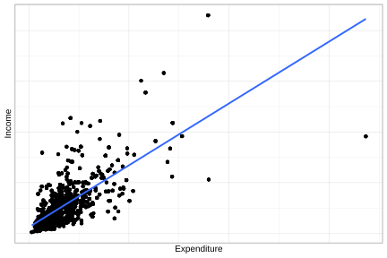

5.3 Estimación de los parámetros del modelo
En términos del ajuste de modelos de regresión con encuestas de hogares, se han desarrollado metodologías inferenciales avanzadas que integran las fuentes de incertidumbre en un mismo marco analítico, buscando reflejar tanto la estructura del diseño como los supuestos y limitaciones del modelo. Entre las aproximaciones más relevantes se encuentran la pseudo-verosimilitud (Molina & Skinner, 1992) y la inferencia combinada (Binder, 2011).
El método de pseudo-verosimilitud extiende las técnicas tradicionales de máxima verosimilitud para ajustarlas a las particularidades de los diseños muestrales complejos. En este enfoque, la distribución de muestreo definida por el diseño ocupa un rol central, mientras que la distribución del modelo pasa a un segundo plano. Si bien en contextos de modelos bien especificados los estimadores basados en pseudo-verosimilitud tienden a ser insesgados o consistentes, su principal virtud radica en evitar los sesgos que se originarían al ignorar el diseño muestral. En términos prácticos, este método traduce el modelo tradicional en uno que respeta la forma en que los datos fueron obtenidos, garantizando inferencias más sólidas.
En contraste, la inferencia combinada propone un marco unificado en el que se integran simultáneamente la variabilidad del muestreo y la incertidumbre del modelo. Al considerar ambas fuentes, este enfoque ofrece una visión más completa de la variabilidad total y permite obtener estimaciones más precisas y confiables. Su principal aporte radica en evitar los sesgos que pueden surgir cuando el análisis se realiza exclusivamente desde la perspectiva del diseño o del modelo. De este modo, la inferencia combinada resulta especialmente útil en aplicaciones donde se requiere equilibrar representatividad poblacional y solidez estadística de los modelos ajustados.
Cuando se desea estimar los parámetros de un modelo de regresión lineal a partir de una muestra con un diseño complejo, el enfoque estándar cambia. En consecuencia, los estimadores tradicionales, como los obtenidos por máxima verosimilitud o mínimos cuadrados, pueden resultar sesgados y producir errores estándar poco confiables. Frente a esta situación, Wolter & Wolter (2007) propone el uso de métodos no paramétricos robustos, como la linealización de Taylor o Bootstrap, para estimar varianzas y obtener inferencias válidas.
En el caso de un modelo de regresión lineal simple, la estimación de \(\beta_1\) bajo un esquema de muestreo complejo se realiza mediante un estimador ponderado, que puede expresarse de la siguiente forma:
\[ \hat{\beta_{1}} = \frac{\sum_{h} \sum_{i} \sum_{k} w_{hik}\,(y_{hik}-\hat{\bar{y}})(x_{hik}-\hat{\bar{x}})} {\sum_{h} \sum_{i} \sum_{k} w_{hik}\,(x_{hik}-\hat{\bar{x}})^{2}} = \frac{\hat{t}_{xy}}{\hat{t}_{xx}} \]
En donde \(\hat{\bar{y}}=\hat{t}_y/\hat{N}\) y \(\hat{\bar{x}}=\hat{t}_x/\hat{N}\) corresponden a las medias estimadas de las variables de estudio y auxiliar, respectivamente, mientras que \(w_{hik}\) representa los pesos de muestreo asociados a cada unidad de observación. Esta formulación incorpora explícitamente dichos pesos, lo que permite considerar las probabilidades desiguales de selección y las características propias del diseño muestral. Asimismo, la varianza estimada de \(\hat{\beta}_1\) puede aproximarse como:
\[ \widehat{Var}\left(\hat{\beta_{1}}\right) \approx \frac{\widehat{Var}(\hat{t}_{xy})+\hat{\beta}_{1}^{2}\widehat{Var}(\hat{t}_{xx})-2\hat{\beta}_{1}\widehat{Cov}(\hat{t}_{xy},\hat{t}_{xx})}{(\hat{t}_{xx})^{2}} \]
Si \(\hat{\beta}_{1}\) corresponde al estimador de la pendiente en un modelo de regresión lineal simple ponderado, entonces el estimador del intercepto \(\hat{\beta}_{0}\) está dado por
\[ \hat{\beta}_{0} = \hat{\bar{y}} - \hat{\beta}_{1}\hat{\bar{x}} \]
Nótese que la varianza de \(\hat{\beta}_{0}\) depende simultáneamente de los estimadores \(\hat{\bar{y}}\), \(\hat{\bar{x}}\) y \(\hat{\beta}_{1}\). Por esta razón, su aproximación puede obtenerse mediante las propiedades de la varianza de combinaciones lineales de estimadores, en conjunto con técnicas de linearización de Taylor. A partir de este procedimiento se deriva la matriz de varianzas y covarianzas de los coeficientes del modelo, de la cual se obtienen tanto los errores estándar como las covarianzas asociadas a las estimaciones de los parámetros.
En el caso de la regresión múltiple, si \(\hat{\boldsymbol{\beta}}\) representa el estimador de \(\boldsymbol{\beta}\), entonces la varianza de cada coeficiente se estima considerando su interdependencia con los demás parámetros, lo que se refleja en la construcción de una matriz de varianzas-covarianzas que recoge tanto la variabilidad individual como las covarianzas entre todos los estimadores. De acuerdo con Kish & Frankel (1974), este cálculo requiere utilizar totales ponderados de cuadrados y productos cruzados de todas las combinaciones entre la variable dependiente \(y\) y el conjunto de predictores \(\mathbf{x} = (1, x_1, \ldots, x_p)\). En términos generales:
\[ \widehat{Var}(\hat{\boldsymbol{\beta}}) = \hat{\boldsymbol\Sigma} = \begin{bmatrix} \widehat{Var}(\hat{\beta}_{0}) & \widehat{Cov}(\hat{\beta}_{0},\hat{\beta}_{1}) & \cdots & \widehat{Cov}(\hat{\beta}_{0},\hat{\beta}_{p}) \\ \widehat{Cov}(\hat{\beta}_{0},\hat{\beta}_{1}) & \widehat{Var}(\hat{\beta}_{1}) & \cdots & \widehat{Cov}(\hat{\beta}_{1},\hat{\beta}_{p}) \\ \vdots & \vdots & \ddots & \vdots \\ \widehat{Cov}(\hat{\beta}_{0},\hat{\beta}_{p}) & \widehat{Cov}(\hat{\beta}_{1},\hat{\beta}_{p}) & \cdots & \widehat{Var}(\hat{\beta}_{p}) \end{bmatrix} \]
En este capítulo se mostrará cómo implementar estos modelos en R mediante la librería survey (Lumley, 2024), junto con srvyr (Freedman Ellis & Schneider, 2024) y tidyverse (Wickham, Averick, et al., 2026) para organizar el flujo de trabajo. Se abordará la especificación del diseño muestral, la estimación de modelos lineales y logísticos, así como la obtención de errores estándar y pruebas de hipótesis ajustadas al diseño, integrando los fundamentos teóricos con ejemplos prácticos reproducibles. Para ejemplificar los conceptos desarrollados hasta este punto, se empleará la misma base de datos utilizada a lo largo del libro. El proceso inicia con la carga de las librerías, los datos y la definición del diseño de muestreo:
library(survey)
library(srvyr)
library(tidyverse)
data(BigCity, package = "TeachingSampling")
survey_data <- readRDS("Data/encuesta.rds")
survey_design <- survey_data %>%
as_survey_design(
strata = Stratum,
ids = PSU,
weights = wk,
nest = TRUE
)En los ejemplos desarrollados a lo largo de este capítulo se emplerán los mismos subgrupos considerados en los capítulos anteriores.
urban_subset <- survey_design %>%
filter(Zone == "Urban")
rural_subset <- survey_design %>%
filter(Zone == "Rural")
female_subset <- survey_design %>%
filter(Sex == "Female")
male_subset <- survey_design %>%
filter(Sex == "Male")Con el objetivo de ajustar un modelo de regresión entre las variables ingreso y gasto, resulta conveniente explorar previamente la relación existente entre ambas variables. Para ello, se construye un diagrama de dispersión mediante ggplot2, el cual permite evaluar visualmente la forma y la intensidad de la asociación. El resultado se presenta en la Figura 5.1.
unweighted_plot <- ggplot(
data = survey_data,
aes(x = Expenditure, y = Income)
) +
geom_point() +
geom_smooth(method = "lm", se = FALSE)
unweighted_plot
Figura 5.1: Diagrama de dispersión entre gasto e ingreso en la muestra (sin ponderar)
Los datos muestrales conservan una relación aproximadamente lineal entre ingreso y gasto, aunque se observa una mayor dispersión en los valores correspondientes a hogares con niveles de gasto más elevados. Una vez completada la exploración gráfica de los datos, se procede al ajuste de los modelos de regresión lineal.
Para ajustar modelos incorporando los factores de expansión se usa la función svyglm de la librería survey, que permite estimar modelos lineales incorporando explícitamente las características del diseño muestral. En este caso, la expresión Income ~ Expenditure especifica que la variable Income se modela en función de la variable Expenditure; es decir, se ajusta una regresión lineal simple en la que el gasto actúa como variable explicativa del ingreso. El argumento design = survey_design indica que el modelo debe utilizar el objeto de diseño muestral previamente definido, mientras que family = stats::gaussian() especifica que se ajusta un modelo lineal con distribución normal, equivalente a una regresión lineal clásica.
fit_svy <- svyglm(
Income ~ Expenditure + Zone + Sex,
design = survey_design,
family = stats::gaussian()
)
fit_svy## Stratified 1 - level Cluster Sampling design (with replacement)
## With (238) clusters.
## Called via srvyr
## Sampling variables:
## - ids: PSU
## - strata: Stratum
## - weights: wk
##
## Call: svyglm(formula = Income ~ Expenditure + Zone + Sex, design = survey_design,
## family = stats::gaussian())
##
## Coefficients:
## (Intercept) Expenditure ZoneUrban SexMale
## 73.58 1.22 66.65 20.64
##
## Degrees of Freedom: 2604 Total (i.e. Null); 116 Residual
## Null Deviance: 635000000
## Residual Deviance: 309000000 AIC: 38300La salida anterior corresponde al ajuste de un modelo de regresión lineal en el que la variable Income se explica a partir de las variables Expenditure, Zone y Sex. Los resultados indican la existencia de una relación positiva entre ingreso y gasto, de modo que, manteniendo constantes las demás variables, el ingreso esperado aumenta en aproximadamente 1.22 unidades por cada unidad adicional de gasto.
Asimismo, se evidencian diferencias sistemáticas asociadas a las características sociodemográficas incluidas en el modelo: residir en zona urbana se asocia con un incremento promedio de 66.65 unidades en el ingreso respecto de la categoría de referencia, mientras que ser hombre se asocia con un aumento de 20.64 unidades en comparación con la categoría base del sexo. El intercepto estimado, igual a 73.58, representa el nivel esperado de ingreso para la categoría de referencia del modelo (zona rural y sexo femenino) cuando el gasto es igual a cero.